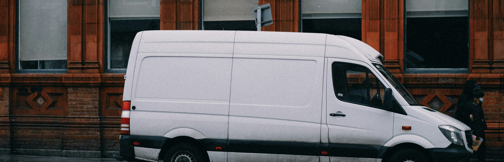
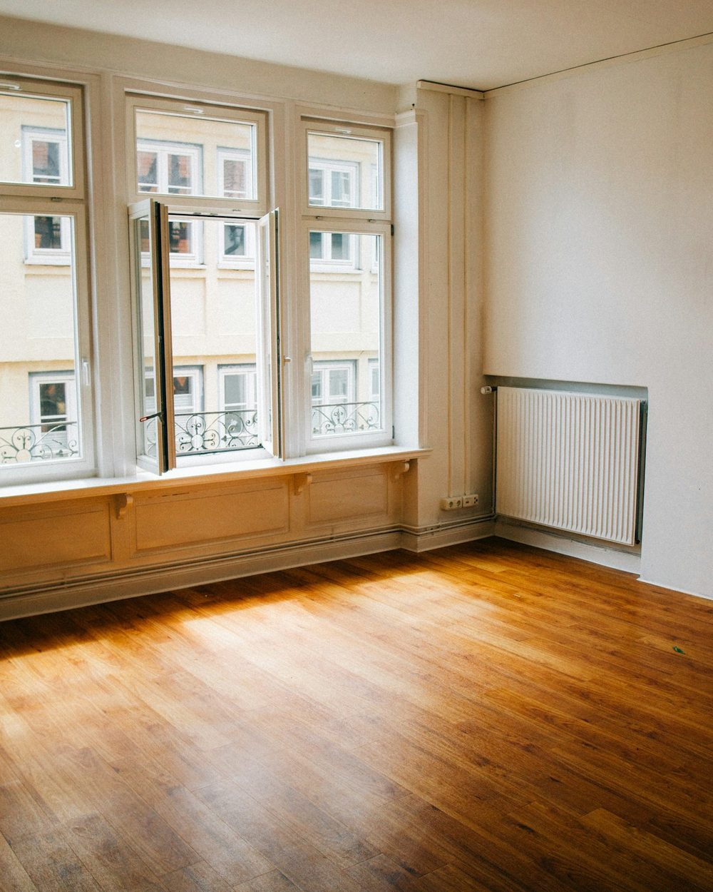
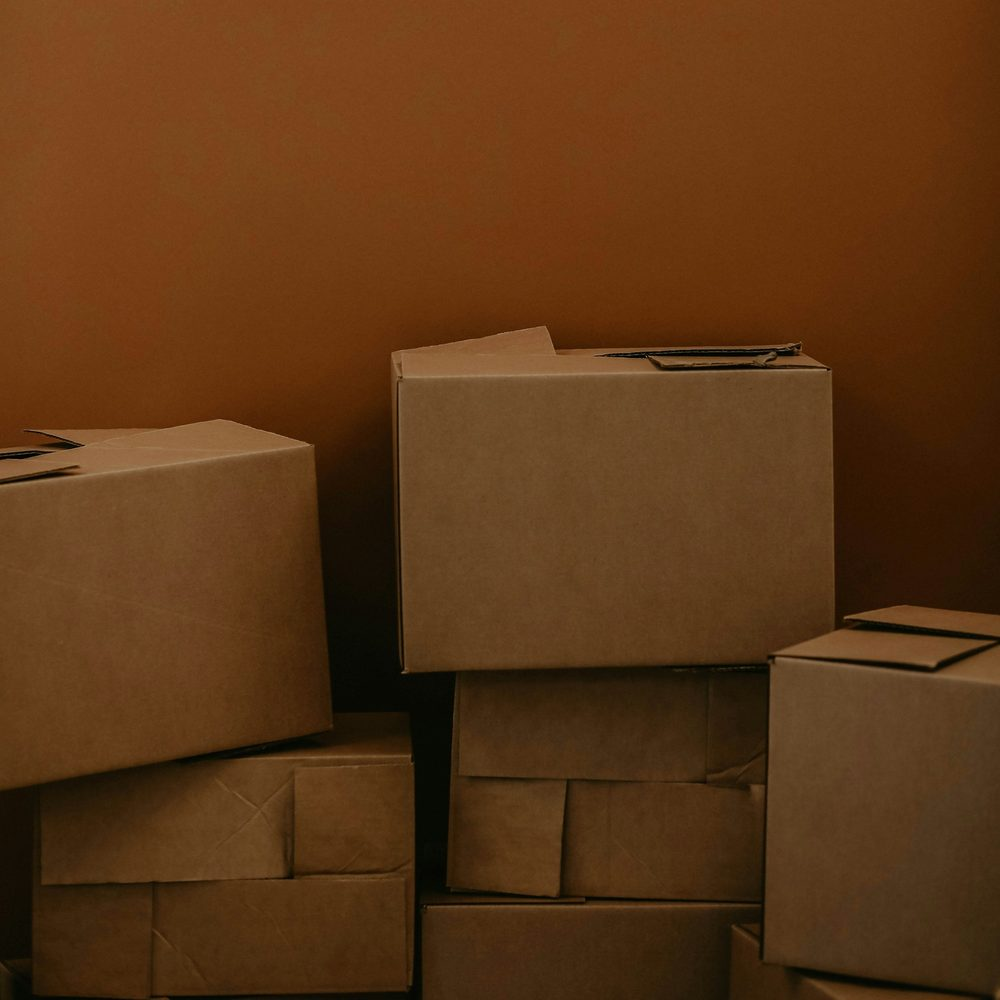

Ihr Umzug — gut vorbereitet.
Privatumzüge, Büro- und Projektumzüge: Sie sagen uns, wohin es geht — wir übernehmen den Rest. Mit einer kurzen Vorab-Anfrage sparen Sie bei der Beratung wertvolle Zeit.
Was SML Spitzer bewegt
Vom einzelnen Umzugskarton bis zur ganzen Büroetage — neun Leistungen rund um Umzug und Logistik.
Beispiel-Leistungsübersicht dieser Konzeptvorschau — das genaue Leistungsspektrum stimmt der Betrieb mit Ihnen ab.Privatumzüge
Ihr Zuhause zieht um — wir kümmern uns ums Ganze.
Privatumzug anfragen →Distribution
Warenverteilung und Logistiklösungen für Unternehmen.
Projekt-/EDV-Umzüge
Sensible Technik und ganze Projekte sicher umziehen.
Neumöblierung & Montage
Neue Möbel liefern, aufbauen, einrichten.
Möbelverwertung & Entsorgung
Alte Möbel fachgerecht entsorgen oder verwerten.
Büromöbellogistik
Büroausstattung planen, transportieren, aufstellen.
Lagerlogistik
Zwischenlagerung und Logistik aus einer Hand.
Umzugsequipment
Kartons, Decken und Zubehör zum Ausleihen.
Mehrwertdienste
Zusätzliche Leistungen rund um Ihren Umzug.

1903
Über 120 Jahre in Bewegung — von der Gründung bis zu Ihrem nächsten Umzug.

Beispielfoto (Symbolbild)So läuft Ihr Umzug ab
- Beratung. Sie schildern uns Ihr Vorhaben — persönlich oder am Telefon.
- Besichtigung vor Ort. Für ein verbindliches Angebot sehen wir uns Ihr Zuhause an und ermitteln dabei das Umzugsvolumen.
- Ihr Angebot. Sie erhalten ein individuelles Angebot, abgestimmt auf Ihren Umzug.

Beispielfoto (Symbolbild)Rund um Ihren Umzug
- Ein-/Auspackservice
- Möbel-Ab-/Aufbau
- Küchendemontage
- Verpackungsmaterial
- Außenlifte & Treppensteiger
- Halteverbotszonen organisieren
Ihr Umzugsunternehmen aus Mosbach — seit über 120 Jahren
1903 gegründet, 1949 zur Kommanditgesellschaft geworden: SML Spitzer bewegt seit Generationen, was Menschen und Unternehmen wichtig ist.
- Über 120 Jahre Erfahrung in Umzug und Logistik
- Hauptsitz in Mosbach, weitere Standorte auch in Dortmund, Hannover und München
- Von der Privatumzug bis zur Büromöbellogistik aus einer Hand
In drei Schritten zu Ihrem Umzug
Anfragen
Umzugsart, Von/Nach und Wunschtermin — in wenigen Minuten notiert.
Besichtigen
Wir sehen uns Ihr Zuhause oder Ihre Räume an und ermitteln den Umfang.
Umziehen
Zum Wunschtermin übernehmen wir Ihren Umzug — sicher und geplant.
Beispiel-Ablauf der Konzeptvorschau — den tatsächlichen Ablauf stimmt der Betrieb mit Ihnen ab.